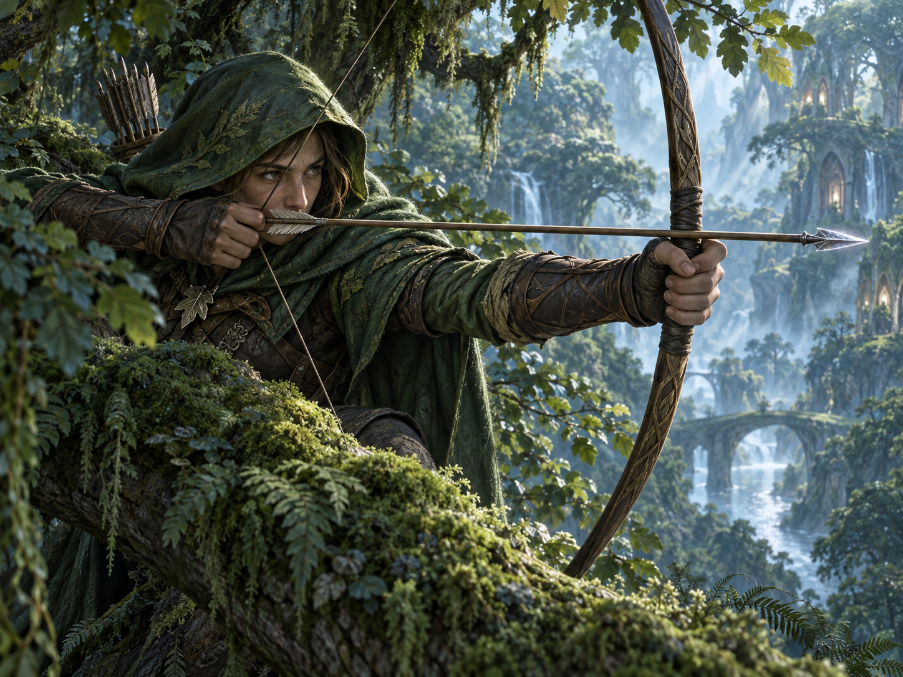
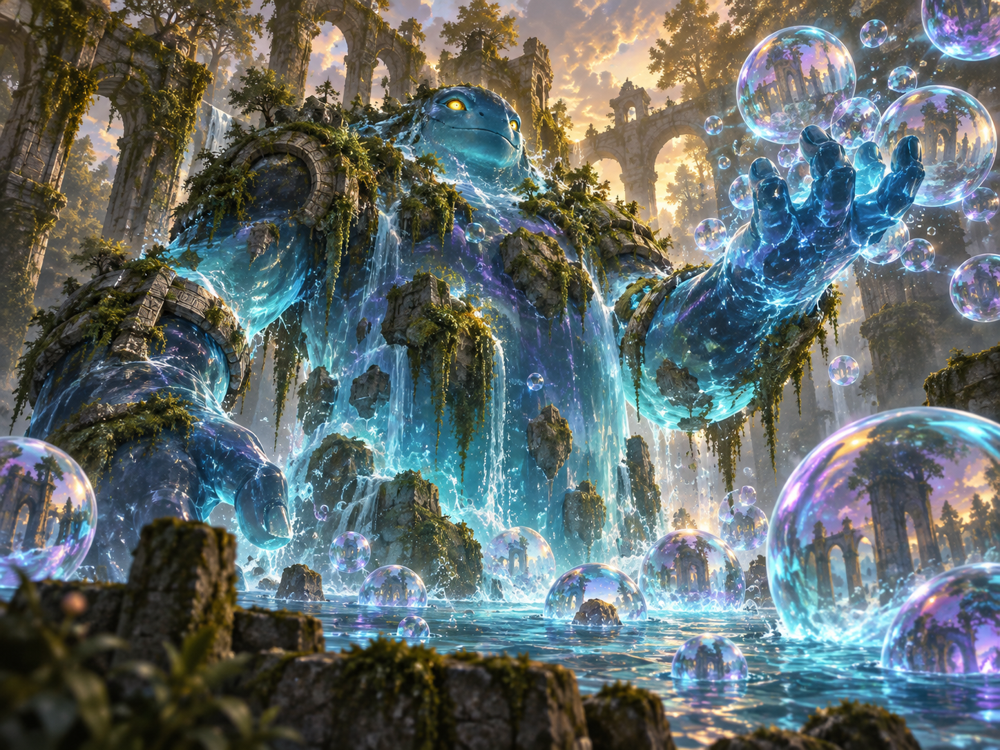

Start the duel
Both heroes begin with 20 life and five cards. The first player is chosen randomly and skips their first turn’s draw.
Card battler · Three classes · Fixed decks
Choose a class, spend energy, and build a board of minions, spells, and trinkets in a head-to-head card duel.
Learn the game ↓
Archers Warriors Mages is a two-player card battler. Each player chooses one of three classes and uses its fixed 40-card deck. Play minions, cast spells, and protect your hero while building a winning board.
Both heroes begin with 20 life and five cards. The first player is chosen randomly and skips their first turn’s draw.
At the start of each turn, maximum energy increases by one, energy refills, and you draw a card. Spend energy to play cards from your hand.
Reduce the opposing hero to zero life. A player also loses if they must draw from an empty deck.
These are fixed class decks, with 40 cards each. Minion stats below are written as power / toughness. Copies are the number of that card in the starting deck.
Ranged minions avoid return damage from melee fighters. Bolt pressures heroes while Hail of Arrows clears fragile enemy boards.
Efficient minions, permanent team buffs, and extra Footsoldiers build a wide board. Duel can turn a small advantage into a favorable fight.

Bounce effects, card draw, and protective Bubbles buy time. Primordial offers a huge body and sends the rest of the board back to hand.
| Rule | How it works |
|---|---|
| Minions | Attack once per turn, starting on the turn after they enter play. They can attack an enemy hero or minion. |
| Damage | Minions exchange combat damage. Damage remains on a surviving minion; zero toughness sends it to the discard pile. |
| Ranged | A ranged minion takes no combat damage from a non-ranged minion, whether attacking or defending. Spell and on-play damage still apply. |
| Permanent changes | Power/toughness buffs and lost keywords last while the card stays in play. Bouncing it to hand restores its printed state. |
| Summoning | Summoned minions arrive on the right of your board, cannot attack immediately, and do not fire their own on-play rules. |
| Trinkets | Board cards that are not minions. They cannot attack or be attacked and are ignored by effects that target only minions. |
| Next-turn triggers | Resolve after your normal draw, provided the triggering card remains in play. |
| Duel | Choose its targets in order. The forced fight does not consume a minion’s normal attack. |
| Card | Energy | Type / stats | Copies | Effect |
|---|---|---|---|---|
| Bolt | 1 | Spell | 10 | Deal 2 damage to a hero. |
| Sniper | 2 | Minion · 2 / 1 | 14 | Ranged. |
| Sharpshooter | 3 | Minion · 3 / 1 | 10 | Ranged. On play: deal 1 damage to a minion or hero. |
| Hail of Arrows | 3 | Spell | 6 | Deal 1 damage to every enemy minion. |
| Card | Energy | Type / stats | Copies | Effect |
|---|---|---|---|---|
| Bear | 2 | Minion · 3 / 2 | 8 | No additional effect. |
| Swords | 2 | Spell | 5 | Give all friendly minions +1 power. |
| Shields | 1 | Spell | 4 | Give all friendly minions +1 toughness. |
| Duel | 2 | Spell | 5 | Give the first target minion +1/+1. The second loses Ranged. Then the two fight. |
| Tactician | 2 | Minion · 1 / 2 | 5 | On play: reduce a target minion’s power by 1. |
| Footsoldier | 1 | Minion · 1 / 2 | 6 | No additional effect. |
| Commander | 5 | Minion · 2 / 3 | 4 | On play: summon two Footsoldiers. |
| Rally | 5 | Spell | 3 | Summon two Footsoldiers, then give all friendly minions +1 power. |
| Card | Energy | Type / stats | Copies | Effect |
|---|---|---|---|---|
| Bouncer | 1 | Minion · 1 / 1 | 16 | On play: return a minion to its owner’s hand. |
| Oozification | 4 | Spell | 4 | Destroy a minion. Its owner summons one Ooze per point of its current toughness. |
| Plan | 3 | Trinket | 7 | Draw one card now. At your next turn, draw one more and destroy Plan. |
| Study | 2 | Spell | 7 | Draw two cards, then choose one card to discard. |
| Primordial | 8 | Minion · 10 / 10 | 2 | On play: return all other board cards to their owners’ hands. |
| Bubble Shield | 2 | Spell | 4 | Summon two Bubbles. |
| Token | Type / stats | Effect |
|---|---|---|
| Ooze | Minion · 0 / 1 | Summoned by Oozification; not included in the starting deck. |
| Bubble | Trinket | When its owner’s hero is attacked, return the attacker to its owner’s hand and destroy this Bubble. Not included in the starting deck. |
Trade ranged minions into non-ranged attackers when it improves your board, and count your remaining direct damage before committing Bolt.
Swords and Shields affect every friendly minion already in play. Rally summons before its buff, so the new Footsoldiers benefit too.
Bounce can rescue or reset a friendly minion as well as delay an enemy. Watch your deck size: extra draws can become dangerous near deck-out.
Rules reviewed on 29 September 2026. This guide describes the source version available on that date; match settings and older replays can differ.